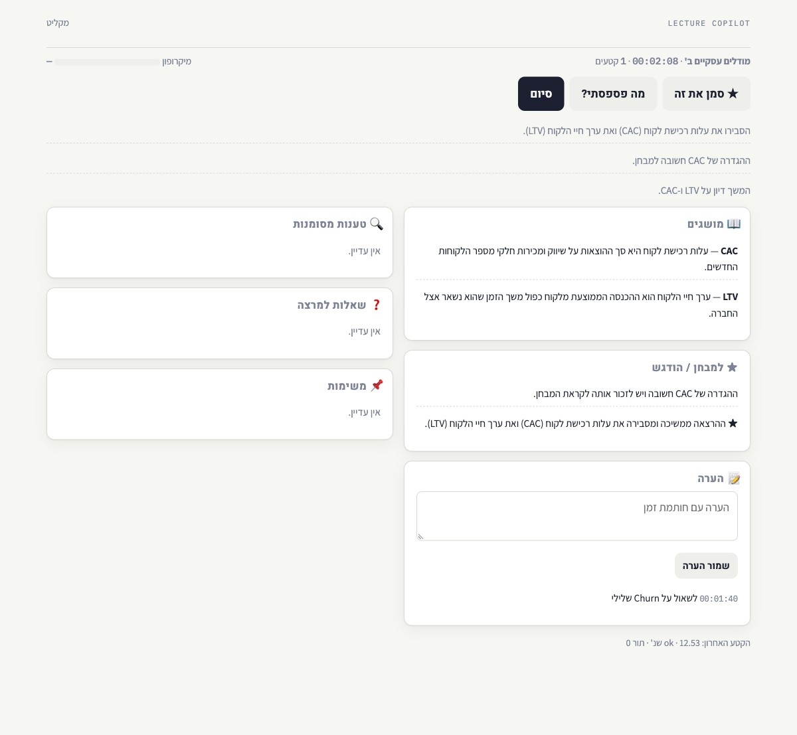
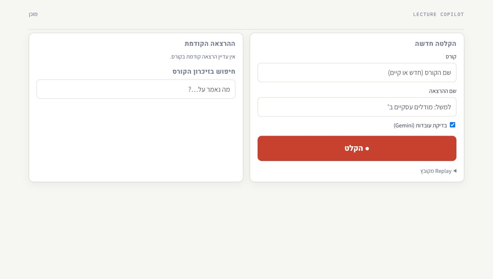
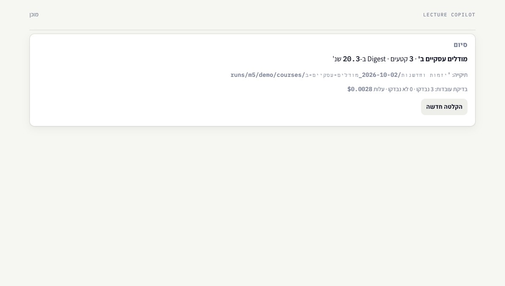

זה מה שלוחצים עליו בכיתה. פקודה אחת מרימה את Ollama, בודקת את MacWhisper ואת המפתח, ופותחת דף אחד בדפדפן. לפני: קורס, שם, בדיקת עובדות, ההרצאה הקודמת, וחיפוש בזיכרון הקורס. בזמן: לוח שקט שמתעדכן מהמסד, מד מיקרופון, "★ סמן את זה", הערה, "מה פספסתי". אחרי: הנתיב ל-Digest והעלות. קריסה באמצע? בפתיחה הבאה יש באנר, ולחיצה אחת מסיימת את ה-Digest מהקטעים שנשמרו.
ענף feat/m5-liveהמספרים מ-eval/m5.jsonנבנה לפני המועד (תוכנן ל-13–15.10)
7/8שער M5 · המיקרופון מחכה לך
523בדיקות (היו 492), ruff נקי
38.14 שנ'Digest אחרי סיום הרצאה חיה · תקציב 120
15.16 שנ'שחזור אחרי קריסה
איך זה נראה
הצילומים הם של הרצאה מומצאת על CAC ו-LTV, על מסד נתונים נפרד (D-M2-8).

בזמן ההרצאה

לפני

אחרי
המספרים
סימולציה חיה של 20.0 דקות דרך הדף (הקלטה מהתרגול, בקצב אמיתי): 28 קטעים, אף אחד לא נכשל; עיבוד קטע p95 15.98 שנ'; ★ והערה הופיעו בלוח; "מה פספסתי" ענה בעברית 2 פעמים; 6 טענות נבדקו ב-$0.0059; ה-Digest מוכן 38.14 שנ' אחרי הסיום.
קריסה בכוונה:kill -9 אחרי 2 קטעים. בפתיחה מחדש הופיע הבאנר, ולחיצה על "סיים והפק Digest" הניבה Digest ב-15.16 שנ'.
דף הקורס:course.html עם מילון מצטבר מכל ההרצאות, ★, טענות עם פסקי דין, שאלות ומשימות, ותיבת סינון.
המיקרופון: צעד אחד אצלך
macOS לא נתן למעטפת של הסשן הזה גישה למיקרופון — ההקלטה נתקעת כי אין חלון שבו תופיע בקשת ההרשאה. לכן הסימולציה החיה רצה מקובץ בקצב אמיתי, והמיקרופון עצמו נבדק בבדיקה עם זרם מזויף.
דקה אצלך, פעם אחת, מ-Terminal:python -m lecture_copilot.cli miccheck — macOS ישאל על המיקרופון, תאשר. הפקודה מקליטה עשר שניות ורושמת מתי המד עבר −40 dB. אחר כך python -m lecture_copilot.cli copilot פותח את הדף.
מה נתפס בהרצה האמיתית
תמלול דרך הדף הלך ל-MacWhisper במקום לקורא התמלולים ("File not found"). הדף בוחר עכשיו את המתמלל לפי המקור, עם בדיקה.
לא היה איך להקליד שם קורס חדש (רשימה נפתחת ריקה במסד חדש). עכשיו שדה טקסט עם הצעות.
תגית בעברית בסגנון LTR, ותמלול שהתעלם מקצב אמיתי. שניהם תוקנו.
השרת הראשון רץ עם קוד ישן בזמן שהוספתי את הרישום שהשער קורא — הסימולציה והקריסה הורצו שוב על הקוד הנוכחי.
ההחלטות של M5
D-M5-1 — הדף לא מחזיק אמת משלו: כל שינוי הוא אירוע בסוקט ושליפה מחדש מ-SQLite. פעם בשנייה עובר "טיק" עם הזמן והמד.
D-M5-2 — "★ סמן את זה" לוקח את תקציר הקטע האחרון (או 30 השניות האחרונות של התמלול) כהדגשה שלך; הערה מקבלת את הזמן שחלף כחותמת.
מה הלאה
אצלך:miccheck מ-Terminal; Google Drive for desktop; התיוגים ב-eval/benchmark.json.
פתוח: דף הקורס של קורס הפיתוח מכיל 510 שורות מילון — כל כתיב של מושג בנפרד. איחוד לפי משמעות בין הרצאות הוא המנוף הבא.
M6: Notion — חמישה מסדים, עמוד להרצאה, עמוד לקורס.